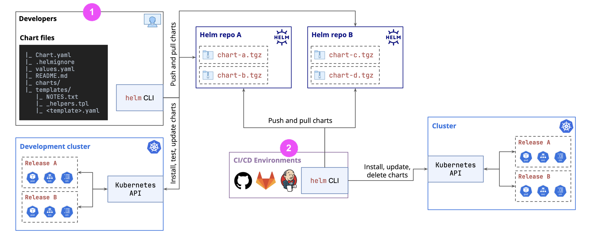
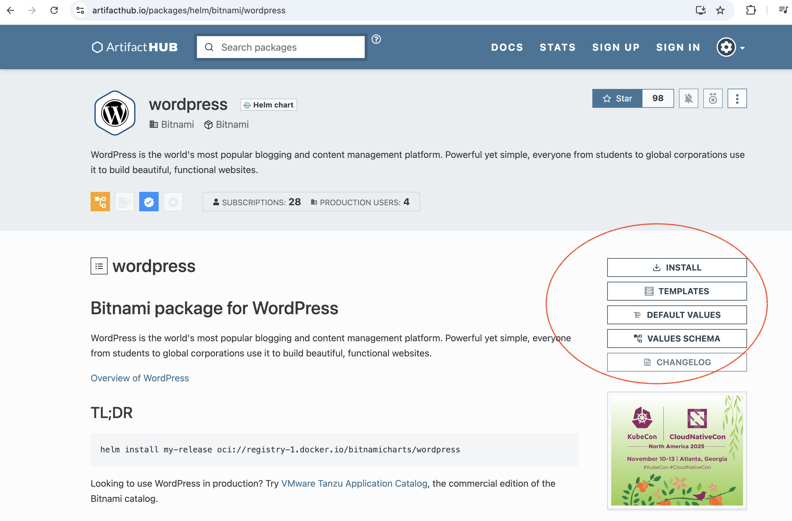
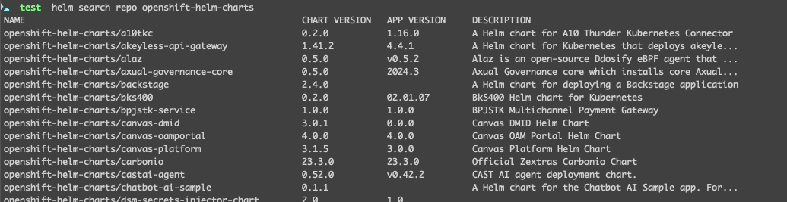
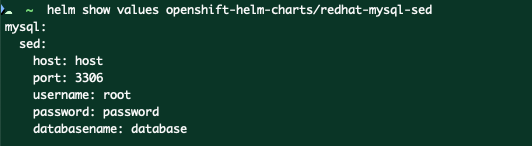

Helm
Helm 模板关键语法¶
{{ tpl .Values.text . }} # 解析字符串中的模板
--------¶
1. What is Helm¶
Helm is a command-line application. It introduces the concept of charts. A chart is a package that describes a set of Kubernetes resources that you can deploy.
Helm and Kubernetes¶
Benefits:
- Simplifies the complex resource mgmt
- Consistency across environment - while allowing environment-specific configs
- avoid error-prone manual edits
- allow Version Control and Rollback
- Templating flexibility
Limitations:
- over-complicated chart
- security implications: ONLY use reliable charts!
- release state is stored in Cluster: e.g.:
- a manually change
- secret that not saved in Helm
- upgrades might be challenging: make sure you do backup
Info
Helm is package manager for Kubernetes, akin yum for Redhat, brew for MacOS, or npm for NodeJS
concepts
- chart
- release: instance of chart
Helm VS Kustomize¶
| Dimension | Helm | Kustomize |
|---|---|---|
| Overall purpose | Package manager for Kubernetes with support for emplating, dependency management, and versioning of applications. | Customize existing Kubernetes YAML manifests by overlaying changes also defined in YAML. |
| Complexity | More complex - it introduces the need to learn Go templates and the overall structure of charts. | Simpler - it leverages only native YAML. |
| Customization features | Full templating system with conditionals, loops, functions, and variable substitution. | Strategic merge patches, JSON patches, name prefixes/suffixes, common labels, and annotations. |
| Use-cases |
Helm Architecture¶
Helm CLI interacts directly with Kubernetes API

- use Helm CLI to deploy Helm Chart
- use CI/CD tool to automatically deploy Helm Chart
2. Preparation¶
Make sure the following tools are installed:
minikube¶
minikube version
minikube start
minikube dashboard
minikube pause
minikube unpause
minikube stop
minikube config set memory 9001
minikube addons list
minikube delete --all
# to access service from LocalHost
minikube service [ServiceName]
kubectl¶
# get pods in ALL namespaces
kubectl get pods -A
# check both Client and Server Version
kubectl versoin
kubectl config current-context
helm¶
VSCode¶
- recommended extension: Kubernetes @Microsoft
- Better disable auto formatting from the extension Prettier
3. Fundamentals¶
ArtifactHub¶
ArtifactHub repository includes lots of popular Helm Charts.

- INSTALL: how to use it
- TEMPLATES: all the Manifests, a.k.a Helm Templates
- DEFAULT VALUES: default values + customizable values
- VALUES SCHEMA: more detials
Other interesting informations:
- APPLICATION VERSIONS: the version of the underlying application - in this case, version of Wordpress
- CHART VERSIONS: the versions of the chart
CHART VERSIONS
CLIs¶
Helm Repository¶
The distributed community Helm chart repository is located at Artifact Hub and welcomes participation.
The following commands change only local configuration:
| 命令 | |
|---|---|
helm repo add openshift-helm-charts https://charts.openshift.io/ |
add a new Helm chart repository(named openshift-helm-charts) to your local Helm configuration. |
helm repo list |
List Helm chart repositories. |
helm repo update |
Update Helm chart repository. |
helm search repo |
List ALL available charts in the ALL repos - Add --versions flag to list all versions even though its the same chart |
helm search repo openshift-helm-charts |
search for available charts in the openshift-helm-charts repository |
helm repo remove REPOSITORY1_NAME REPOSITORY2_NAME … |
Remove repositories |
Example
result of helm search repo openshift-helm-charts:

Note
某个chart中有这些values：
[student@workstation ~]$ helm show values do280-repo/etherpad --version 0.0.6
replicaCount: 1
defaultTitle: "Labs Etherpad"
defaultText: "Assign yourself a user and share your ideas!"
image:
repository: etherpad
name:
tag:
自定义值 values.yaml：
image:
repository: registry.ocp4.example.com:8443/etherpad
name: etherpad
tag: 1.8.18
Deployment¶
[RELEASE]: release/app[CHART]: chart name
| 命令 | |
|---|---|
helm install [RELEASE] [CHART] |
deploy the app from Chart with ReleaseName |
➡️ Customized values in CLI: helm install myChartApp do280-repo/etherpad --set "mariadb.auth.password=xxx" --version 0.0.6 |
|
➡️ Customized values in values.yaml File: helm install myChartApp do280-repo/etherpad -f values.yaml --version 0.0.6 |
|
helm list |
list all deployment |
helm status [RELEASE] |
check status of named release |
helm history [RELEASE] |
check release history |
helm rollback [RELEASE] |
roll back to the previous release -->⚠️ This does NOT necessary delete all the unwanted resource - such as replicaset, because its NOT managed by Helm, but by deployment |
helm rollback [RELEASE] [REVISION NUMBER] |
roll back to the release X |
helm upgrade [RELEASE] [CHART] [flags] |
upgrade the release |
--atomic auto-rollback if upgrade fails --cleanup-on-fail --debug --timeout 2m |
|
➡️ upgrade version to 0.0.7: helm upgrade myChartApp do280-repo/etherpad --version 0.0.7 |
|
➡️ upgrade values: helm upgrade myChartApp do280-repo/etherpad -f values2.yaml |
|
Flags 比如 -f values.yaml |
|
helm get values [RELEASE] |
get currently defined values in this RELEASE |
helm get values [RELEASE] --revision [REVISION NUMBER] |
get defined values in this RELEASE REVISION X |
helm template [RELEASE] helm-directory > base/deployment.yaml |
extract the object definition from Helm Chart into Kustomize's /base/deployment.yaml |
helm uninstall [RELEASE] |
delete deployment/release --> this might NOT delete PV or PVC --> if there is a database, the OLD password will NOT work for a new release |
Info
to use values.yaml you can use either --values or -f
依赖管理¶
| 命令 | |
|---|---|
helm dependency update |
根据 Chart.yaml 中的依赖关系，下载或更新依赖的 Chart 到 charts/ 目录。 |
helm dependency build |
使用 Chart.lock 文件中的版本信息，重新下载依赖的 Chart。 |
helm dependency list |
列出当前 Chart 的所有依赖项及其状态。 |
helm dependency prune |
删除不再需要的依赖 Chart。 |
create & check¶
| 命令 | |
|---|---|
helm create myChart |
to create a new chart |
helm pull xxx |
download a chart from a repository（即charts的数据库） |
helm show chart myChart |
show info of a chart  |
helm show values myChart |
show default values of a chart  |
use --version to choose a specific version |
4. Create Own Helm Chart (manually)¶
The following diagram shows the structure of a minimal Helm chart:
sample/
├── Chart.yaml
├── values.yaml
├── README.md
├── LICENSE
├── .helmignore
├── charts/
├── templates/
└── |── tests/
|── NOTES.txt
|── deploy.yaml
|── svc.yaml
|── ingress.yaml
└── _helpers.tpl
Chart.yamlcontains chartmetadata, such as name and versionvalues.yamlfile contains defaultvaluesfor the chartREADME.mdLICENSE: plain text file containing the license.helmignore: paths to ignore when packing the Chartcharts/: subscharts, a.k.a chart dependencies -> they should be referred inChart.yamlfile and will be downloaded and saved locallytemplates/directory contains manifest templates such asdeploymentstests/tests for running:helm testNOTES.txt: the printed contents during chart installation/upgrade_helpers.tplcontains template helper function to reduce duplication
Comments¶
You can either use YAML comment or GO comment:
# I'm a YAML comment, I will remain in the generated YAML
{{/* I'm a GO comment, I will NOT remain, only leave an empty line */}}
{{- /* I'm a GO comment, I will NOT remain, NEITHER leave an empty line */}}
⚠️ Indentation and Space are important! Add space after
{{/*or{{-
Context "."¶
Helm 的 Current Context（.）指的是在模板渲染过程中，当前正在被操作和访问的顶层对象. It has 3 top-level keys:
Values: 来自values.yaml、--set或--set-file等Release: built-in release values （比如Release.Name,Release.Time,Release.Namespace,Release.Service,Release.IsUpgrade,Release.IsInstall,Release.Revision）.Release.Nameis the one you use inhelm install <ReleaseName> .
Chart: built-in chart values （比如Chart.Name、Chart.Version)
. 是一个指针
最关键的是要将 . 理解为一个指针或光标。它指向当前你正在处理的数据结构:
- 当在模板的最顶层时，
.指向一个包含所有内置对象的根对象。你可以通过.Values、.Release来访问它们。 - 当你使用
{{ range ... }}或{{ with ... }}语句时，Helm 会临时改变.的指向。在循环体或with 块内部，.不再指向根对象，而是指向当前正在遍历的单个元素或你指定的新对象。
Warning
you can check the meaning by adding a comment in manifest /templates/svc.yaml:
# The value of the . {{ . }}
helm template .
Root Context "$"¶
$ 指向模板最顶层的根上下文，永远不会变。
data:
{{- range .Values.servers }}
# 使用 `$.Release.Name` 来从根对象获取版本名称
{{ $.Release.Name }}-{{ .name }}: “{{ .port }}”
{{- end }}
Packaging & Publishing¶
This will create a nginx-0.1.0.tgz, the 0.1.0 is the Chart.version
helm package nginx
Publishing
- create a git public repo
https://johndoe.github.io/helm-charts - add
nginx-0.1.0.tgz - run
helm repo index .to list all Charts in current folder --> this generatesindex.yaml - add both
nginx-0.1.0.tgzandindex.yamlto git repo - now you can download the chart with git page url
https://johndoe.github.io/helm-charts/nginx-0.1.0.tgz
Usage
helm repo add my-git-helm-repo https://johndoe.github.io/helm-chartshelm install my-nginx-app johndoe/nginx
5. Go Template¶
Variables¶
in <chart>/templates/_helpers.tpl we can create variables:
# create
{{ $fullName := printf "%s-%s" .Release.Name .Chart.Name }}
# update
{{ $fullName = printf "%s-%s" .Release.Name .Chart.Name }}
Empty string
Empty string "" will be consindered as "False", therefore we can always do:
{{- if .Values.customName }}
...
{{- end}}
default function
provide default value
{{- .Values.customName | default $fullName }}
⚠️ fullName will be the DEFAULT value if .Values.customName is not defined!
Variables has scope, it only works where it is declared. E.g. in {{ define }}... {{ end }} or {{ if }}... {{ end }} block. --> 和其他编程语言一样
Template Functions¶
<functionName> <arg1> <arg2>
list¶
example: list
different myChart/templates/sandbox.yaml and the results of helm template .
1 ✅
list: {{ list 1 2 3 }}
# result:
list: [1 2 3]
2 ❌
list: {{ list 1 2 3 | toYaml }}
# result:
Error: YAML parse error on templating-deep-dive/templates/sandbo x-yaml: error converting YAML to JSON:
yaml: block sequence entries are not allowed in this context
它不够不会自动换行！所以你得到的是：
list: - 1
- 2
- 3
3 ❓
list:
{{ list 1 2 3 | toYaml }}
# result:
list:
- 1
- 2
- 3
4 ✅
list: {{ toYaml (list 1 2 3) | nindent 2 }}
# or
list: {{ list 1 2 3 | toYaml | nindent 2 }}
# result:
list:
- 1
- 2
- 3
nindent 函数自动给结果前加上 newline
|¶
Pipe | passes the left's result to the right (as the LAST argument), these 3 lines have the same effect:
test: {{ lower (replace " " "-" .Values.test ) }}
test: {{ replace " " "-" .Values.test | lower }}
test: {{ lower .Values.test | replace " " "-" }}
range¶
range through a list such as
services:
- type: ClusterIP
port: 80
- type: NodePort
port: 80
{{- range $idx $element := (.Values.services | default list) }}
ports:
- name: port-{{ $idx }}
protocol: {{ $svc.type }}
port: {{ $svc.port }}
targetPort: {{ $.Values.containerPorts.http }}
{{- end}}
range through a dict such as
services:
svc1:
type: ClusterIP
port: 80
svc2:
type: NodePort
port: 80
{{- range $key $value := (.Values.services | default dict) }}
ports:
- name: port-{{ $key }}
protocol: {{ $value.type }}
port: {{ $value.port }}
targetPort: {{ $.Values.containerPorts.http }}
{{- end}}
with¶
修改当前context。to reduce repetition of keys from:
ports:
- protocol: {{ .Values.container.myContainer.containerPorts.protocol }}
port: {{ .Values.container.myContainer.containerPorts.port }}
targetPort: {{ .Values.container.myContainer.containerPorts.targetPort }}
to:
{{- with .Values.container.myContainer.containerPorts }}
ports:
- protocol: {{ .protocol }}
port: {{ .port }}
targetPort: {{ .targetPort }}
{{- end }}
required¶
fail the tempate with msg $str if $val is NOT provided or EMPTY
{{- required $str $val}}
# assign value to dummy variable to PREVENT printing value
{{- $_ := required $str $val}}
# inline check - here the $val will be used directly
port: {{ required $str $val }}
example
{{- required "Error: .Values.SecurityContext.enabled is required!" .Values.SecurityContext.enabled}}
you can also put all the validation in a separate
/templates/validation.yaml
fail¶
{{- if int .Values.securityContent.runAsUser | eq 0 -}}
{{- fail "Container cannot be run as Root, please choose another User Number" }}
{{- end }}
include¶
to use the Named Templates
{{ include $str $ctx }}
$str: identifier of the Named Templates$ctx: context:{{ include "MY.NAME" . }}-.means current context{{ include "MY.NAME" .Values }}means ONLY the value.yaml
Named Template¶
_helpers.tpl 是 Helm Chart 中的一个辅助模板文件，通常用来定义可复用的模板片段（类似于函数）。这些模板可以通过 {{ include }} 在其他模板（如 deployment.yaml、service.yaml）中调用。
to avoid duplication by reuse pre-defined Named Templates.
all files under
templates/and has_in the beginning will NOT be rendered as Kubernetes manifests --> they are the template files**There are 3 actions (
define,template,block) and 1 function (include):
define¶
to create a Named Templates inside of a template file. Usually the name of the Named Template starts with [ChartName].
{{- define "MY.NAME" }}
# body of template here
{{- end }}
Example
{{/*Expects a port to be passed as the context*/}}
{{- define "templating-deep-dive.validators.portRange" -}}
{{- $sanitizedPort := int . -}}
{{- if or (lt $sanitizedPort 1) (gt $sanitizedPort 65535) }}
{{- fail "Error: Ports must always be between 1 and 65535." }}
{{- end -}}
{{- . }}
{{- end -}}
{{- . }} returns the original value if its valid
template¶
block¶
6. Chart Dependencies¶
You can use Subcharts as dependency in your own chart. Common use cases are:
- Databases
- Shared Services
- Common Utilities
Subcharts are placed under charts/ folder. They can be:
- folder containing all required Chart files
*.tarfile
# Chart.yaml
apiVersion: v2
name: deps-demo
description: Illustrate deps
type: application
version: 0.1.0
appVersion: '1.16.0'
dependencies:
- name: postgresql
version: '16.2.1'
repository: 'https://charts.bitnami.com/bitnami'
| CLI | Description |
|---|---|
helm dependency list <ChartDirectory> |
show dependency of a chart |
helm dependency update <ChartDirectory> |
- downloads and saves the dependencies tar files- updates Chart.lock file |
helm dependency build <ChartDirectory> |
- downloads and saves the dependencies tar files |
Chart.lockfile is similar torequirements.txt
Note
helm dependency buildfails if the versions in Chart.yaml is different from Chart.lock file -> run helm dependency update to sync the versions in Chart.yaml
Passing values to Subchart¶
to one Subchart¶
to pass values from Parent to a specific Subchart, just add the name of the Subchart in Parent's values.yaml:
subchart-demo:
customValue: "Hello from the Parent chart"
to all Subcharts¶
In parent/values.yaml, Whatever is specified under the global key becomes available to all the Subchart under the current parent chart.
- Parent: define variable under
globalkey:global: customValue: "Hello from the Parent chart" - Subchart: use the value by
{{ .Values.global.customValue }}
use Named Templates from Subshart¶
in Parent chart, we can use the Named Templates defined in the subchart/templates/_helper.tpl
Conditinally enable Subchart¶
Method 1¶
- in
parent/Chart.yaml:dependencies: - name: postgresql version: '16.2.1' repository: 'https://charts.bitnami.com/bitnami' condition: postgresql.enabled # ⬅️ - in
parent/values.yaml:postgresql: enabled: false
Method 2¶
Better way if you want to manage several Subcharts together.
- in
parent/Chart.yaml:dependencies: - name: postgresql version: '16.2.1' repository: 'https://charts.bitnami.com/bitnami' tags: - database # ⬅️ - in
parent/values.yaml:tags: database: false
Warning
the relationship between tags are AND
7. Advanced Topics¶
--------¶
Common Errors¶
cannot re-use a name that is still in use¶
- Error:
Error: INSTALLATION FAILED: cannot re-use a name that is still in use - Reason: a Helm release is already exist
- Solution1:
helm uninstall <ReleaseName> - Solution2:
helm secrets upgrade <ReleaseName> <ChartName>instead ofhelm secrets install <ReleaseName> <ChartName>
unable to decode "": json:¶
- Error:
INSTALLATION FAILED: unable to build kubernetes objects from release manifest: unable to decode "": json: cannot unmarshal number into Go struct field ObjectMeta.metadata.annotations of type string - Reason: a number value is being used where a string is expected in the
metadata.annotationssection. - Solution:
metadata: annotations: example.com/timestamp: "1633024800" # ✅ String with quotes example.com/version: 2.0 # ❌